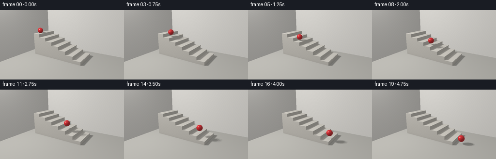
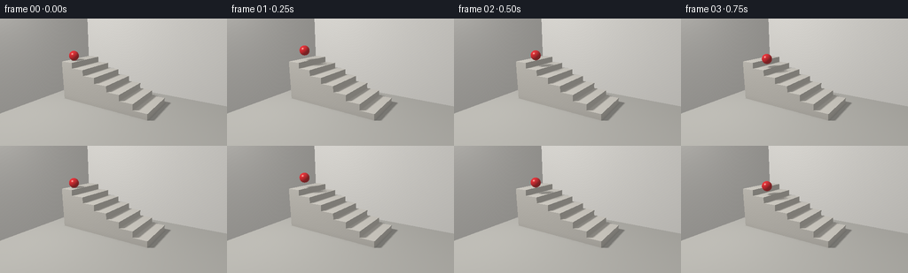
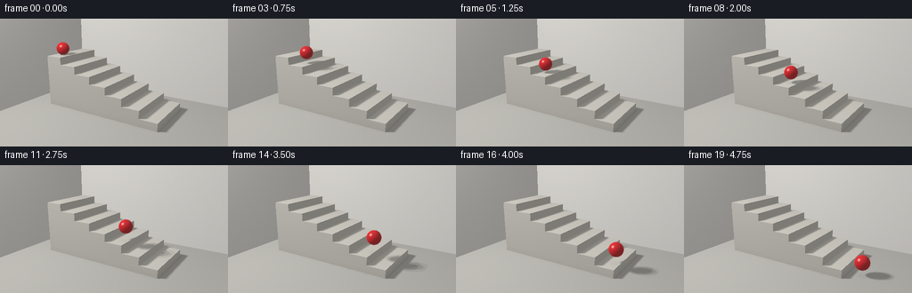

CODING AGENTS AS PIXEL WORLD MODELS
traex/GPT-6.1-Sol · instance_preservation_0021
点击播放 · 原生 RGB 像素
逐轮保存的候选
回放视频、检查图与代码变化。
每份候选均可单独播放。实际图片检查记录在下方工具轨迹中。
候选 01播放与检查图
点击播放 · 原生 RGB 像素

展开代码变化
--- 上一保存版本
+++ 本次保存版本
@@ -0,0 +1,170 @@
+from pathlib import Path
+import json
+import numpy as np
+from PIL import Image
+import artifact_io
+
+ROOT = Path(__file__).resolve().parent
+spec = json.loads((ROOT / 'task_spec.json').read_text())
+W, H = spec['width'], spec['height']
+S = 2
+w, h = W*S, H*S
+
+def norm(v):
+ return v / np.maximum(np.linalg.norm(v, axis=-1, keepdims=True), 1e-10)
+
+# A fixed perspective view of a broad, pale stone staircase.
+eye = np.array([6.9, 5.15, 10.8], np.float32)
+target = np.array([0.05, 1.35, 0.0], np.float32)
+forward = norm(target-eye)
+right = norm(np.cross(forward, [0,1,0]))
+up = np.cross(right,forward)
+yy, xx = np.mgrid[0:h,0:w]
+scale = np.tan(np.deg2rad(35.5)/2)
+dirs = norm(forward + ((xx+.5-w/2)/(h/2)*scale)[...,None]*right - ((yy+.5-h/2)/(h/2)*scale)[...,None]*up).astype(np.float32)
+rays = dirs.reshape(-1,3)
+N = len(rays)
+boxes = []
+for k in range(7):
+ boxes.append((np.array([-3.15+.9*k,0,-1.45]), np.array([-3.15+.9*(k+1), .38*(7-k),1.45])))
+
+def box_hit(o,d,lo,hi):
+ inv = 1 / np.where(np.abs(d)>1e-9,d,1e-9)
+ a=(lo-o)*inv; b=(hi-o)*inv
+ near=np.minimum(a,b); far=np.maximum(a,b)
+ t0=near.max(axis=-1); t1=far.min(axis=-1)
+ valid=(t1>=np.maximum(t0,0)) & (t0>1e-4)
+ return np.where(valid,t0,np.inf),near
+
+def sphere_hit(o,d,c,r):
+ oc=o-c
+ b=np.sum(oc*d,axis=-1)
+ q=np.sum(oc*oc,axis=-1)-r*r
+ dis=b*b-q
+ t=-b-np.sqrt(np.maximum(dis,0))
+ return np.where((dis>=0)&(t>1e-4),t,np.inf)
+
+# Nearest intersections with steps, floor, and the architectural background.
+t=np.full(N,np.inf); normals=np.zeros((N,3)); mat=np.zeros(N,int)
+for k,(lo,hi) in enumerate(boxes):
+ bt, near=box_hit(eye,rays,lo,hi)
+ select=bt<t
+ axes=near.argmax(axis=-1)
+ nn=np.zeros((N,3)); nn[np.arange(N),axes]=-np.sign(rays[np.arange(N),axes])
+ t[select]=bt[select]; normals[select]=nn[select]; mat[select]=k+1
+for axis,coord,normal,material in [(1,0,[0,1,0],8),(2,-3.1,[0,0,1],9),(0,-4.55,[1,0,0],10)]:
+ pt=(coord-eye[axis])/rays[:,axis]
+ sel=(pt>0)&(pt<t)
+ t[sel]=pt[sel]; normals[sel]=normal; mat[sel]=material
+p=eye+rays*t[:,None]
+view=-rays
+
+# Subtle mineral texture, deliberately much quieter than the red subject.
+noise=(np.sin(p[:,0]*62.3+p[:,2]*79.2+p[:,1]*34.1)*np.sin(p[:,0]*91.8-p[:,2]*63.1)*.5)
+base=np.tile([.62,.59,.535],(N,1))
+steps=mat<8
+base[steps]=[.64,.615,.56]
+base[mat==8]=[.48,.47,.435]
+base[mat>=9]=[.67,.655,.62]
+base *= (1+noise[:,None]*.024)
+# Tread faces catch the soft key light; very thin stone edge finishing.
+for k in range(7):
+ mask=(mat==k+1)&(normals[:,0]>.5)
+ below=.38*(7-k)-p[:,1]
+ band=mask&(below<.026)
+ base[band]*=.88
+
+lights=[np.array([-3.4+dx,7.5,5.0+dz]) for dx,dz in [(-.65,-.6),(.65,-.6),(0,0),(-.65,.6),(.65,.6)]]
+static_terms=[]
+for light in lights:
+ lp=light-p; distance=np.linalg.norm(lp,axis=-1); ld=norm(lp)
+ blocked=np.zeros(N,bool)
+ for lo,hi in boxes:
+ st,_=box_hit(p+normals*.002,ld,lo,hi)
+ blocked |= st<distance
+ diff=np.maximum((normals*ld).sum(axis=-1),0)
+ static_terms.append((ld,distance,diff*(~blocked)))
+# Local occlusion at the base and concave stair corners.
+ao=np.ones(N)
+ao[steps]=.91+.09*np.clip(p[steps,1]/.3,0,1)
+for k in range(7):
+ xedge=-3.15+.9*k
+ top=.38*(7-k)
+ near=(mat==8)&(p[:,0]>xedge-.1)&(p[:,0]<xedge+1)&(np.abs(p[:,2])<1.75)
+ dz=np.maximum(np.abs(p[:,2])-1.45,0)
+ ao[near]*=1-.11*np.exp(-dz[near]*9)
+ if k>0:
+ mask=(mat==k+1)&(normals[:,1]>.5)
+ ao[mask]*=1-.18*np.exp(-(p[mask,0]-xedge)*12)
+
+radius=.335
+
+def position(time):
+ period=.64
+ u=time/period
+ k=int(np.floor(u))
+ f=u-k
+ if k<7:
+ x=-2.7+.9*(k+f)
+ y0=.38*(7-k)+radius
+ y=y0-.38*f + .5*11.0*period**2*f*(1-f)
+ else:
+ x=3.6+.68*(time-7*period)
+ f=(time-7*period)/.6
+ y=radius + .28*np.maximum(0,np.sin(np.pi*np.minimum(f,1)))
+ return np.array([x,y,.73])
+
+def render(time):
+ c=position(time)
+ ambient=(.32+.07*np.maximum(normals[:,1],0))*ao
+ illumination=ambient.copy()
+ for ld,dist,term in static_terms:
+ shadow=sphere_hit(p+normals*.002,ld,c,radius)<dist
+ illumination += .70/len(lights)*term*(~shadow)
+ color=base*illumination[:,None]
+ # Fine diffuse contact shadow gives the ball a firm landing on each tread.
+ nearfloor=normals[:,1]>.5
+ height=np.maximum(c[1]-radius-p[:,1],0)
+ spread=.20+.15*height
+ rr=(p[:,0]-c[0])**2+(p[:,2]-c[2])**2
+ contact=.20*np.exp(-rr/(spread*spread))*np.exp(-height*3)*nearfloor
+ color*=1-contact[:,None]
+ bt=sphere_hit(eye,rays,c,radius)
+ hit=bt<t
+ if hit.any():
+ bp=eye+rays[hit]*bt[hit,None]
+ bn=norm(bp-c)
+ bv=-rays[hit]
+ red=np.tile([.70,.013,.022],(len(bp),1))
+ bd=.24+.11*np.maximum(bn[:,1],0)
+ gloss=np.zeros((len(bp),3))
+ for light in lights:
+ ld=norm(light-bp)
+ dst=np.linalg.norm(light-bp,axis=-1)
+ blocked=np.zeros(len(bp),bool)
+ for lo,hi in boxes:
+ sh,_=box_hit(bp+bn*.002,ld,lo,hi)
+ blocked |= sh<dst
+ visible=~blocked
+ bd += .82/len(lights)*np.maximum(np.sum(bn*ld,axis=-1),0)*visible
+ half=norm(ld+bv)
+ nh=np.maximum(np.sum(bn*half,axis=-1),0)
+ gloss += (.58/len(lights)*nh**95*visible)[:,None]*np.array([1,.93,.81])
+ # A broad window reflection on the red rubber's semi-gloss surface.
+ refl=2*np.sum(bn*bv,axis=-1)[:,None]*bn-bv
+ envtop=np.clip(refl[:,1],0,1)
+ fresnel=.028+.16*(1-np.maximum((bn*bv).sum(axis=-1),0))**5
+ spherecolor=red*bd[:,None]+gloss+fresnel[:,None]*np.stack([.45+.2*envtop,.43+.22*envtop,.41+.23*envtop],axis=-1)
+ color[hit]=spherecolor
+ # Filmic tone with gentle warm light, then sRGB encoding.
+ color=np.clip(color,0,1)
+ srgb=np.where(color<=.0031308,color*12.92,1.055*np.power(color,1/2.4)-.055)
+ image=(srgb.reshape(h,w,3)*255+.5).clip(0,255).astype(np.uint8)
+ return np.asarray(Image.fromarray(image).resize((W,H),Image.Resampling.LANCZOS))
+
+frames=[]
+for i in range(spec['frames']):
+ frames.append(render(i/spec['fps']))
+ print(f'Frame {i+1}/{spec["frames"]}',flush=True)
+artifact_io.save(np.stack(frames).astype(np.uint8),ROOT)
+print('Saved all RGB video artifacts.',flush=True)
候选 02播放与检查图
点击播放 · 原生 RGB 像素


展开代码变化
--- 上一保存版本 +++ 本次保存版本 @@ -20,7 +20,7 @@ right = norm(np.cross(forward, [0,1,0])) up = np.cross(right,forward) yy, xx = np.mgrid[0:h,0:w] -scale = np.tan(np.deg2rad(35.5)/2) +scale = np.tan(np.deg2rad(28.0)/2) dirs = norm(forward + ((xx+.5-w/2)/(h/2)*scale)[...,None]*right - ((yy+.5-h/2)/(h/2)*scale)[...,None]*up).astype(np.float32) rays = dirs.reshape(-1,3) N = len(rays)
候选 03播放与检查图

可观测工具轨迹
实际执行的命令与返回图片。
命令 1exit 0
/bin/bash -lc 'ls -la && cat prompt.txt && cat GENERATION_RULES.md && cat task_spec.json'
命令 2exit 0
/bin/bash -lc 'cat artifact_io.py'
命令 3exit 0
/bin/bash -lc "cat > generate.py <<'PY'
from pathlib import Path
import json
import numpy as np
from PIL import Image
import artifact_io
ROOT = Path(__file__).resolve().parent
spec = json.loads((ROOT / 'task_spec.json').read_text())
W, H = spec['width'], spec['height']
S = 2
w, h = W*S, H*S
def norm(v):
return v / np.maximum(np.linalg.norm(v, axis=-1, keepdims=True), 1e-10)
# A fixed perspective view of a broad, pale stone staircase.
eye = np.array([6.9, 5.15, 10.8], np.float32)
target = np.array([0.05, 1.35, 0.0], np.float32)
forward = norm(target-eye)
right = norm(np.cross(forward, [0,1,0]))
up = np.cross(right,forward)
yy, xx = np.mgrid[0:h,0:w]
scale = np.tan(np.deg2rad(35.5)/2)
dirs = norm(forward + ((xx+.5-w/2)/(h/2)*scale)[...,None]*right - ((yy+.5-h/2)/(h/2)*scale)[...,None]*up).astype(np.float32)
rays = dirs.reshape(-1,3)
N = len(rays)
boxes = []
for k in range(7):
boxes.append((np.array([-3.15+.9*k,0,-1.45]), np.array([-3.15+.9*(k+1), .38*(7-k),1.45])))
def box_hit(o,d,lo,hi):
inv = 1 / np.where(np.abs(d)>1e-9,d,1e-9)
a=(lo-o)*inv; b=(hi-o)*inv
near=np.minimum(a,b); far=np.maximum(a,b)
t0=near.max(axis=-1); t1=far.min(axis=-1)
valid=(t1>=np.maximum(t0,0)) & (t0>1e-4)
return np.where(valid,t0,np.inf),near
def sphere_hit(o,d,c,r):
oc=o-c
b=np.sum(oc*d,axis=-1)
q=np.sum(oc*oc,axis=-1)-r*r
dis=b*b-q
t=-b-np.sqrt(np.maximum(dis,0))
return np.where((dis>=0)&(t>1e-4),t,np.inf)
# Nearest intersections with steps, floor, and the architectural background.
t=np.full(N,np.inf); normals=np.zeros((N,3)); mat=np.zeros(N,int)
for k,(lo,hi) in enumerate(boxes):
bt, near=box_hit(eye,rays,lo,hi)
select=bt<t
axes=near.argmax(axis=-1)
nn=np.zeros((N,3)); nn[np.arange(N),axes]=-np.sign(rays[np.arange(N),axes])
t[select]=bt[select]; normals[select]=nn[select]; mat[select]=k+1
for axis,coord,normal,material in [(1,0,[0,1,0],8),(2,-3.1,[0,0,1],9),(0,-4.55,[1,0,0],10)]:
pt=(coord-eye[axis])/rays[:,axis]
sel=(pt>0)&(pt<t)
t[sel]=pt[sel]; normals[sel]=normal; mat[sel]=material
p=eye+rays*t[:,None]
view=-rays
# Subtle mineral texture, deliberately much quieter than the red subject.
noise=(np.sin(p[:,0]*62.3+p[:,2]*79.2+p[:,1]*34.1)*np.sin(p[:,0]*91.8-p[:,2]*63.1)*.5)
base=np.tile([.62,.59,.535],(N,1))
steps=mat<8
base[steps]=[.64,.615,.56]
base[mat==8]=[.48,.47,.435]
base[mat>=9]=[.67,.655,.62]
base *= (1+noise[:,None]*.024)
# Tread faces catch the soft key light; very thin stone edge finishing.
for k in range(7):
mask=(mat==k+1)&(normals[:,0]>.5)
below=.38*(7-k)-p[:,1]
band=mask&(below<.026)
base[band]*=.88
lights=[np.array([-3.4+dx,7.5,5.0+dz]) for dx,dz in [(-.65,-.6),(.65,-.6),(0,0),(-.65,.6),(.65,.6)]]
static_terms=[]
for light in lights:
lp=light-p; distance=np.linalg.norm(lp,axis=-1); ld=norm(lp)
blocked=np.zeros(N,bool)
for lo,hi in boxes:
st,_=box_hit(p+normals*.002,ld,lo,hi)
blocked |= st<distance
diff=np.maximum((normals*ld).sum(axis=-1),0)
static_terms.append((ld,distance,diff*(~blocked)))
# Local occlusion at the base and concave stair corners.
ao=np.ones(N)
ao[steps]=.91+.09*np.clip(p[steps,1]/.3,0,1)
for k in range(7):
xedge=-3.15+.9*k
top=.38*(7-k)
near=(mat==8)&(p[:,0]>xedge-.1)&(p[:,0]<xedge+1)&(np.abs(p[:,2])<1.75)
dz=np.maximum(np.abs(p[:,2])-1.45,0)
ao[near]*=1-.11*np.exp(-dz[near]*9)
if k>0:
mask=(mat==k+1)&(normals[:,1]>.5)
ao[mask]*=1-.18*np.exp(-(p[mask,0]-xedge)*12)
radius=.335
def position(time):
period=.64
u=time/period
k=int(np.floor(u))
f=u-k
if k<7:
x=-2.7+.9*(k+f)
y0=.38*(7-k)+radius
y=y0-.38*f + .5*11.0*period**2*f*(1-f)
else:
x=3.6+.68*(time-7*period)
f=(time-7*period)/.6
y=radius + .28*np.maximum(0,np.sin(np.pi*np.minimum(f,1)))
return np.array([x,y,.73])
def render(time):
c=position(time)
ambient=(.32+.07*np.maximum(normals[:,1],0))*ao
illumination=ambient.copy()
for ld,dist,term in static_terms:
shadow=sphere_hit(p+normals*.002,ld,c,radius)<dist
illumination += .70/len(lights)*term*(~shadow)
color=base*illumination[:,None]
# Fine diffuse contact shadow gives the ball a firm landing on each tread.
nearfloor=normals[:,1]>.5
height=np.maximum(c[1]-radius-p[:,1],0)
spread=.20+.15*height
rr=(p[:,0]-c[0])**2+(p[:,2]-c[2])**2
contact=.20*np.exp(-rr/(spread*spread))*np.exp(-height*3)*nearfloor
color*=1-contact[:,None]
bt=sphere_hit(eye,rays,c,radius)
hit=bt<t
if hit.any():
bp=eye+rays[hit]*bt[hit,None]
bn=norm(bp-c)
bv=-rays[hit]
red=np.tile([.70,.013,.022],(len(bp),1))
bd=.24+.11*np.maximum(bn[:,1],0)
gloss=np.zeros((len(bp),3))
for light in lights:
ld=norm(light-bp)
dst=np.linalg.norm(light-bp,axis=-1)
blocked=np.zeros(len(bp),bool)
for lo,hi in boxes:
sh,_=box_hit(bp+bn*.002,ld,lo,hi)
blocked |= sh<dst
visible=~blocked
bd += .82/len(lights)*np.maximum(np.sum(bn*ld,axis=-1),0)*visible
half=norm(ld+bv)
nh=np.maximum(np.sum(bn*half,axis=-1),0)
gloss += (.58/len(lights)*nh**95*visible)[:,None]*np.array([1,.93,.81])
# A broad window reflection on the red rubber's semi-gloss surface.
refl=2*np.sum(bn*bv,axis=-1)[:,None]*bn-bv
envtop=np.clip(refl[:,1],0,1)
fresnel=.028+.16*(1-np.maximum((bn*bv).sum(axis=-1),0))**5
spherecolor=red*bd[:,None]+gloss+fresnel[:,None]*np.stack([.45+.2*envtop,.43+.22*envtop,.41+.23*envtop],axis=-1)
color[hit]=spherecolor
# Filmic tone with gentle warm light, then sRGB encoding.
color=np.clip(color,0,1)
srgb=np.where(color<=.0031308,color*12.92,1.055*np.power(color,1/2.4)-.055)
image=(srgb.reshape(h,w,3)*255+.5).clip(0,255).astype(np.uint8)
return np.asarray(Image.fromarray(image).resize((W,H),Image.Resampling.LANCZOS))
frames=[]
for i in range(spec['frames']):
frames.append(render(i/spec['fps']))
print(f'Frame {i+1}/{spec[\"frames\"]}',flush=True)
artifact_io.save(np.stack(frames).astype(np.uint8),ROOT)
print('Saved all RGB video artifacts.',flush=True)
PY
OPENBLAS_NUM_THREADS=1 python generate.py"命令 4exit 0
/bin/bash -lc "sed -i 's/deg2rad(35.5)/deg2rad(28.0)/' generate.py OPENBLAS_NUM_THREADS=1 python generate.py"
视觉工具实际返回图片 1

视觉工具实际返回图片 2

保存候选 3 份；完成命令 4 次；可验证图片返回 2 张。原始 API 响应与完整日志保留在本地。